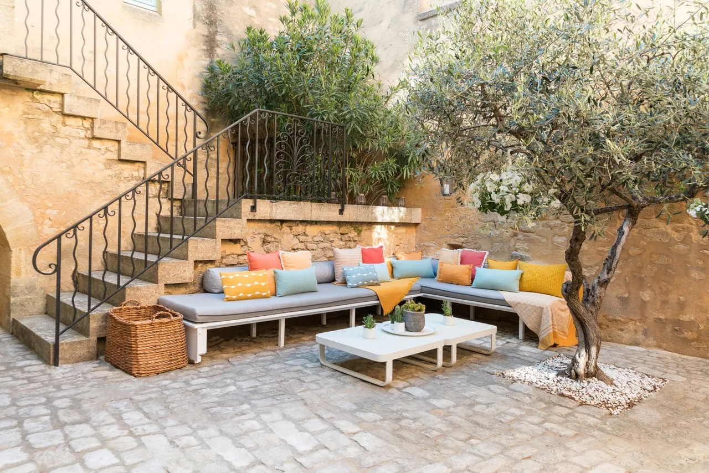
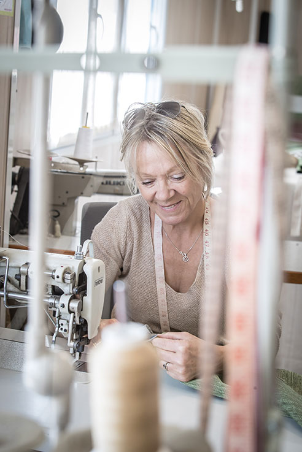
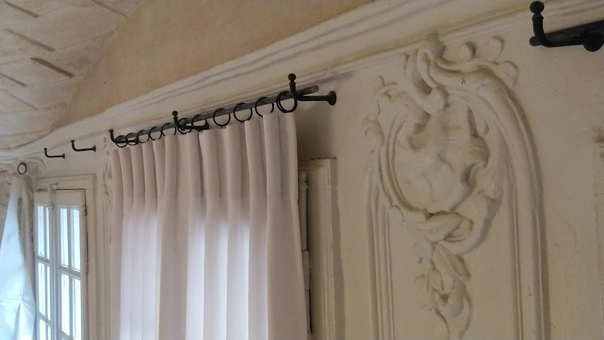
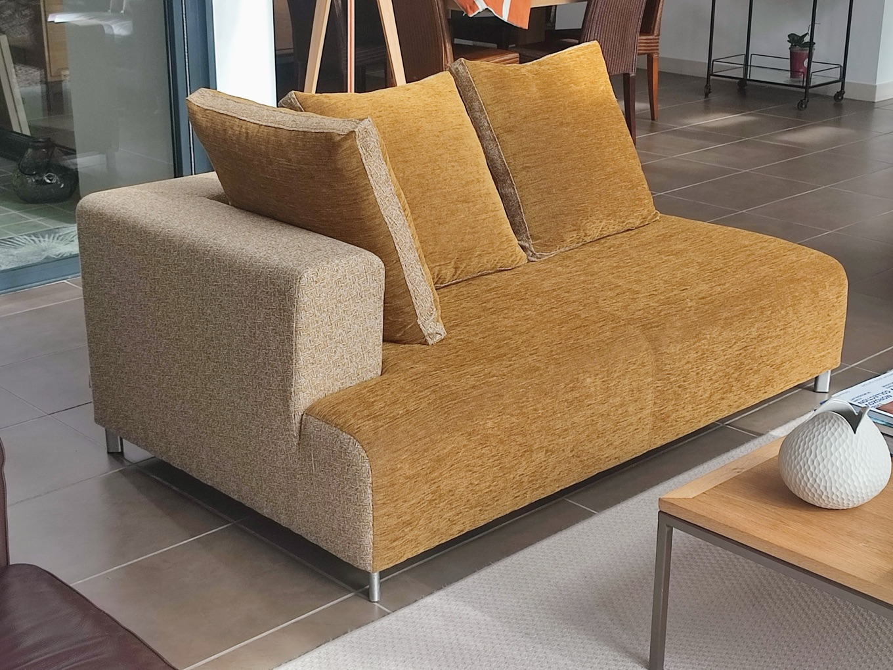
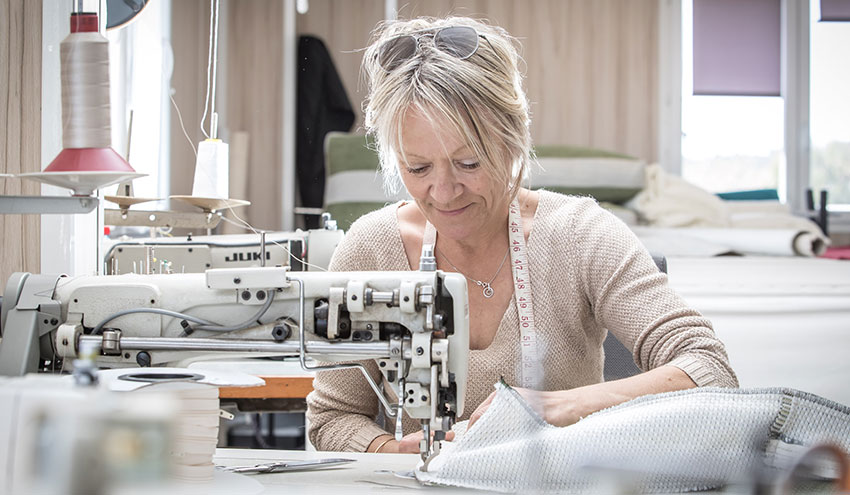
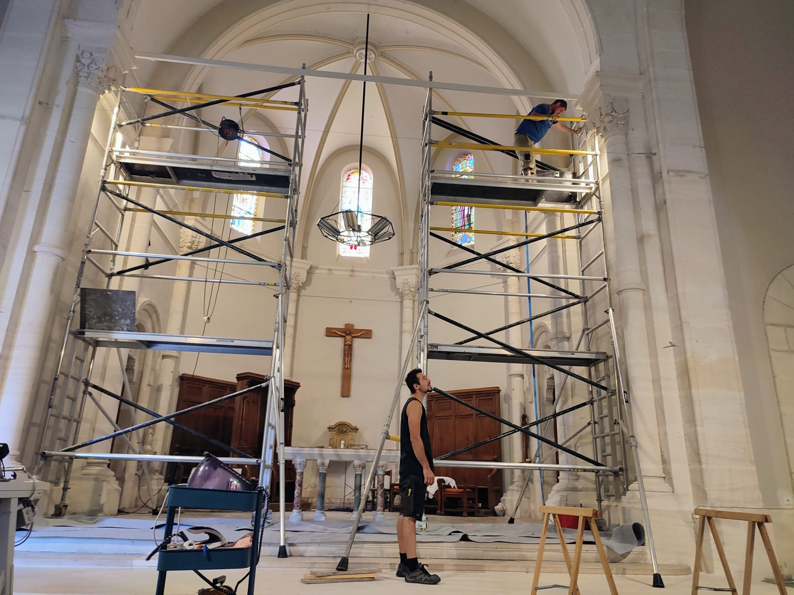

Votre intérieur,
cousu sur mesure.
Couture d'ameublement, décoration d'intérieur et d'extérieur. Rideaux, voilages, stores, coussinage et réfection de sièges — chaque projet est dessiné, mesuré et cousu pour vous.

Nous vous aidons à transformer votre intérieur
Anne Fricher vous accompagne dans la création d'un intérieur unique et confortable grâce à son savoir-faire en tapisserie et décoration. Que vous souhaitiez des rideaux wave élégants, des stores sur-mesure ou la réfection de votre canapé, chaque projet est traité avec soin et précision.
- Prise de mesures et conseil à domicile
- Choix des tissus, accompagné, dans les grandes maisons d'édition
- Confection intégralement réalisée à l'atelier, à Nîmes
- Pose et finitions assurées
Ce que nous réalisons
Trois métiers complémentaires, une seule exigence : un travail juste, durable et parfaitement adapté à votre lieu.

Rideaux & voilages
Tissus sur mesure
Rideaux à plis wave, doublés ou occultants, voilages légers, stores bateau et stores enrouleurs. Chaque pièce est calculée au centimètre pour votre fenêtre.
Voir le détail
Coussinage & sièges
Création de pièces uniques
Réfection de canapés, fauteuils, banquettes et têtes de lit. Coussins d'assise et de dossier pour l'intérieur comme pour les terrasses et les bords de piscine.
Voir le détail
Conseils & décoration
Votre projet, notre priorité
Choix des matières, des couleurs et des tombés, harmonisation des pièces, accompagnement du premier croquis à la pose. Plus de 20 ans d'expérience.
Voir le détailExemples de réalisations
Maisons particulières, hôtels, restaurants et lieux de réception — un aperçu des chantiers menés à Nîmes et dans le Gard.
Ils nous font confiance

Un rendez-vous, un devis, sans engagement
Décrivez-nous votre pièce et vos envies : nous vous rappelons pour convenir d'une visite et d'une prise de mesures.